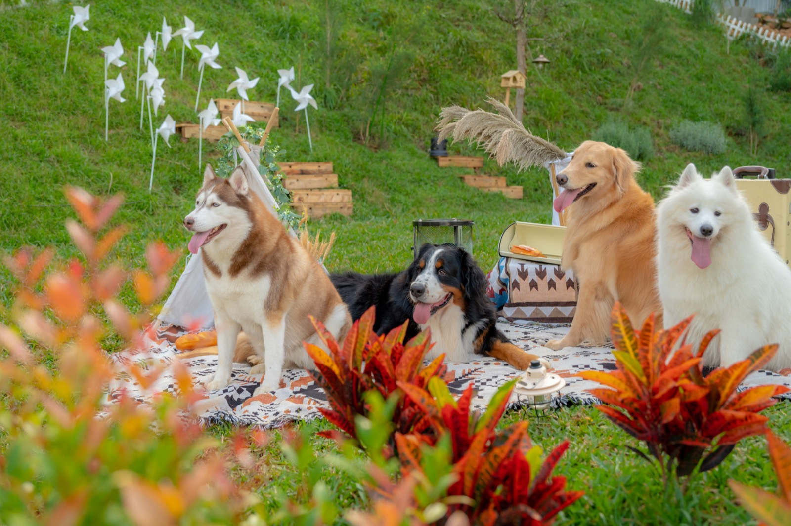

我該什麼時候確認天氣？
出發前與抵達當日都再看一次；山區微氣候變化快，預留雨備與保暖。
噪音與燈光
戶外空間聲音傳得遠，請把音量控制在「同桌可聽見」。燈光亦避免直射鄰近營位。
官方 FAQ
揪好森營區規範、入住與設備問題請見 常見問題。

這裡整理「通則」；入住／取消／設備請以各營區 FAQ 為準。
出發前與抵達當日都再看一次；山區微氣候變化快，預留雨備與保暖。
戶外空間聲音傳得遠，請把音量控制在「同桌可聽見」。燈光亦避免直射鄰近營位。
揪好森營區規範、入住與設備問題請見 常見問題。
新手露營最容易踩雷的不是裝備不足，而是流程錯配：太晚出發、進場後才分工、餐食準備與天氣條件不匹配。比較不同場域時，建議先看『新手容錯率』，例如報到引導是否清楚、現場是否有人員可即時協助、公共規範是否寫得可執行。
第一次準備可以用『72 小時前檢核法』：出發前三天確認天氣與衣著、前一天做分工與打包、出發當天只保留關鍵決策。裝備購買順序也很重要，先買高頻且安全相關（保暖、防雨、照明、醫藥），再買風格型配件。市面上新手友善服務通常有免裝備入住、餐食整合、活動導覽與租借方案，善用這些服務能先建立成功經驗，再逐步升級為半自助或自搭露營。
若是兩天一夜行程，建議把景點數量減半，留更多緩衝時間給移動與收裝，體驗會明顯提升。
| 品牌／場域 | 常見公開價格帶（雙人） | 特色重點 | 適合族群 |
|---|---|---|---|
| 揪好森 Joyforest（桃園楊梅） | 依房型／檔期詢價 | 少帳包場、雙圓頂帳、森林草地與彈性活動動線 | 重視隱私、希望客製流程的小團體 |
| 朋趣 Bon Chill（桃園） | 約 NT$7,600 起（公開專案常見） | 一泊多食與免裝備流程成熟 | 第一次露營、怕麻煩族群 |
| 蟬說：山中靜靜（台中） | 約 NT$5,300～6,800（方案別） | 操作門檻低，公共規範說明完整 | 想用低壓力方式嘗試露營者 |
| 森渼原 ALIVE Glamping Base（台中） | 約 NT$5,500～8,800（房型與季節） | 活動方案多，初學者可快速上手 | 想嘗試多種戶外活動者 |
| 拉波波村（基隆） | 約 NT$4,800～8,200（區位與方案） | 北部交通便利，短程測試成本低 | 週末快閃露營新手 |
以上資訊依 2026/04 公開頁面與旅遊平台可查資料整理，主要用途是協助前期篩選與行程規劃，不取代最終報價與入住條款。建議出發前 7～14 天再次確認最新公告。